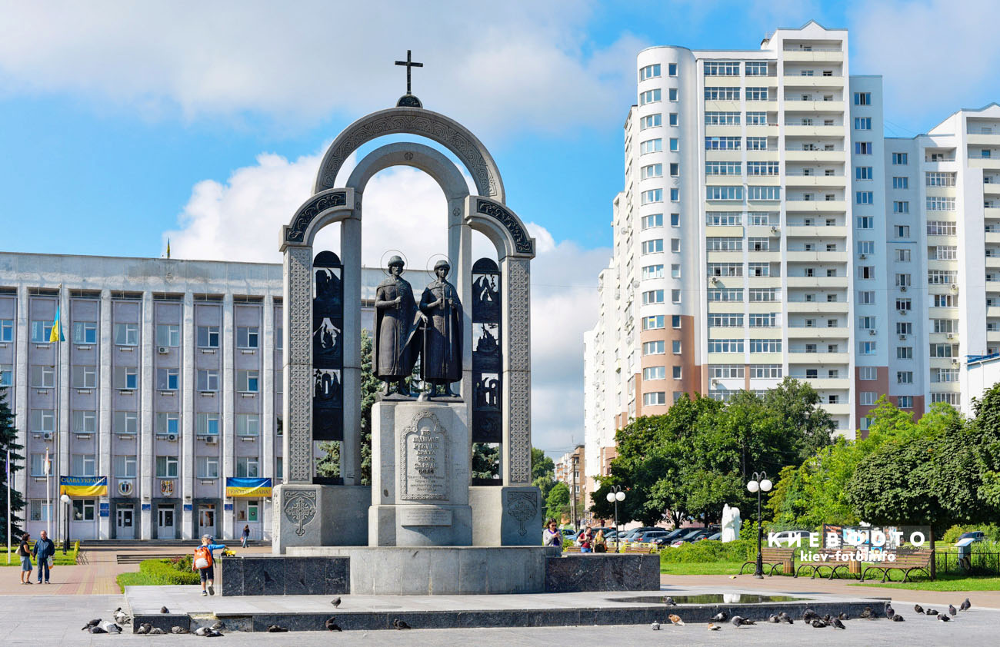
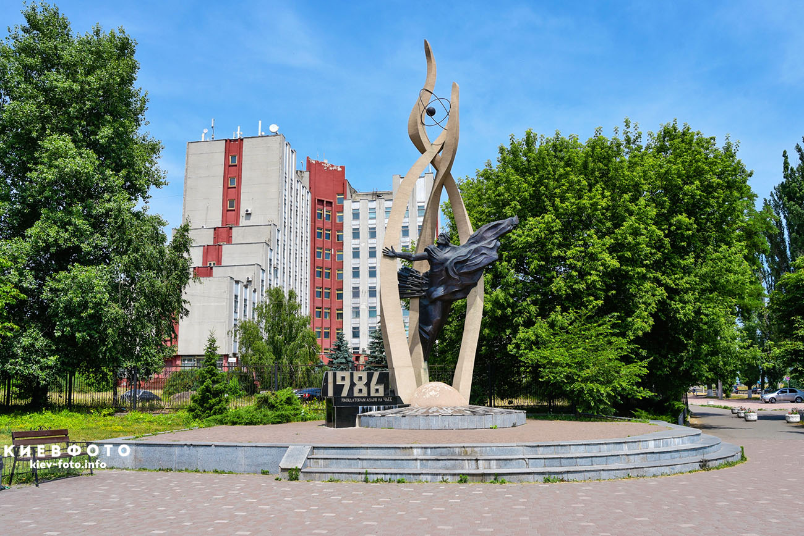
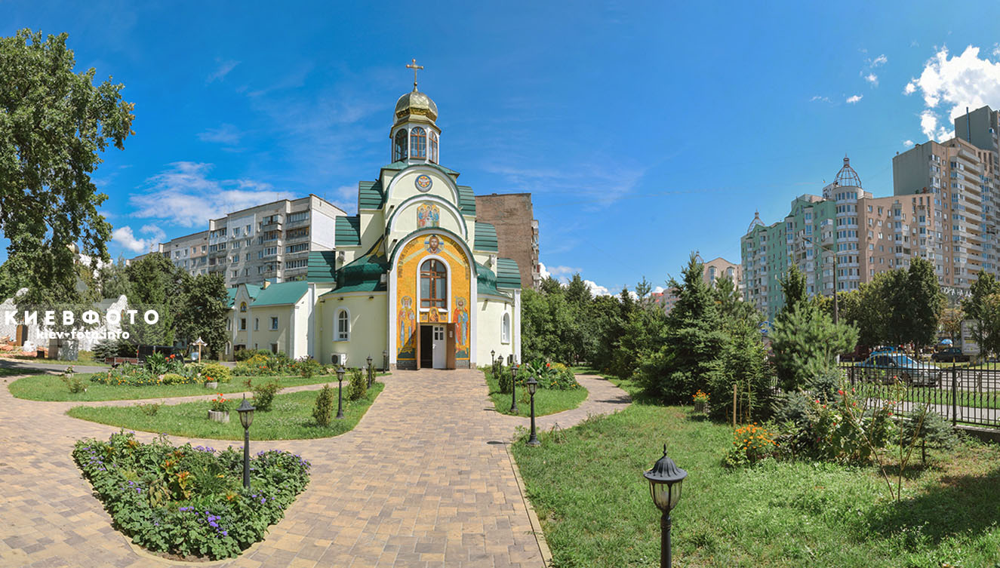
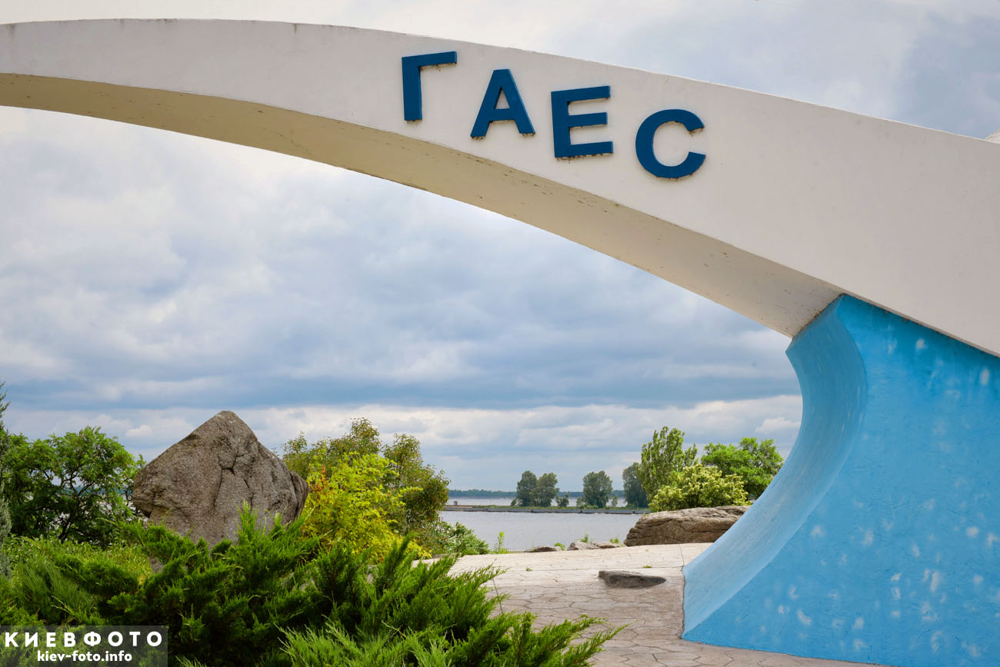
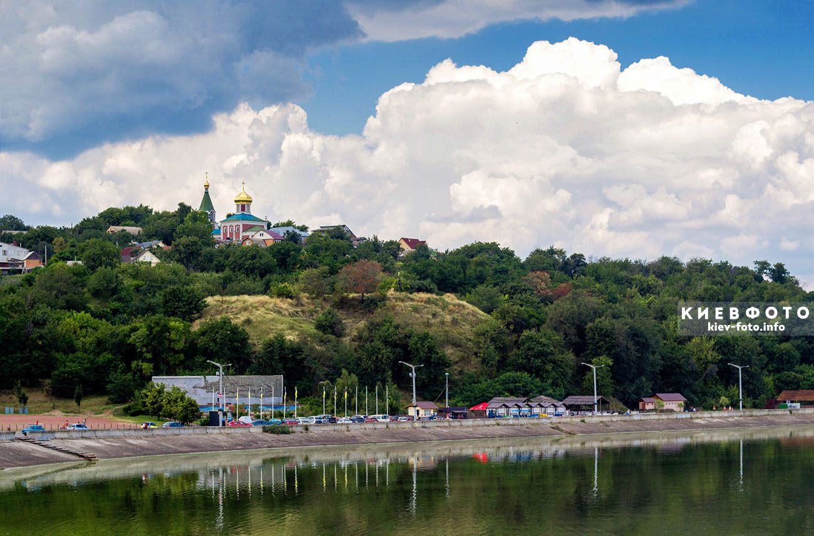

Вы́шгород (укр. Ви́шгород) — город в Киевской области Украины. Административный центр Вышгородского района.
Содержание
Географическое положение
Расположен на правом берегу Днепра, на Киевском водохранилище, менее 1 км от Киева. Северное предместье Киева.
История
В летописях упоминается неоднократно, начиная с 946 года. С 1962 года — посёлок городского типа. Городской статус — с 1968 года.
Древняя история
Вышгород, расположенный в 16 верстах от Киева, вверх по Днепру, впервые упомнянут под 946 годом как город княгини Ольги, в который поступала треть древлянской дани. Он был её любимым местом и городом, обустройству которого она посвящала много забот[2]. По археологическим данным, первое поселение, судя по находкам лепной и круговой посуды, возникло не ранее рубежа IX—X веков. Исследованы линии укреплений X века, соответствующие Вышгородcкому детинцу, и прилегающий курганный могильник (частично) X—XI веков[3]. Наряду с Киевом Вышгород был одним из главных древнерусских центров Среднего Поднепровья. Вышгород состоял из детинца (площадью около 7,5 га), окольного города (около 6 га) и неукреплённых посадов. Он был расположен на высоком холме, прекрасно укреплён и служил форпостом Киева с севера, контролировавший водные пути по Днепру, Ирпени и Десне. Около него обыкновенно переправлялись через Днепр, если шли на Киев со стороны Чернигова или из Киева в Чернигов, чтобы не переходить Десну. Как важный пункт в системе киевского полюдья его упоминает византийский император Константин Багрянородный. С X века в городе располагалась, по-видимому, одна из резиденцией великих князей[4]. Согласно летописи, под 980 годом, именно в Вышгороде Владимир I Святославич якобы содержал 300 своих наложниц. В Вышгороде рано образовался слой собственного боярства, поддерживавший в начале XI века Святополка Владимировича. Особую роль стал играть Вышгород в связи с канонизацией в XI веке первых русских святых Бориса и Глеба, похороненных в городе. Над их усыпальницей был возведён специальный храм, перестраивавшийся и украшавшийся несколькими поколениями русских князей. В 1072 году здесь состоялся Вышгородский съезд князей Ярославичей. Город тогда «держал» известный киевский боярин Микула Чудин. С 1078 года Вышгород получил собственного князя — Ярополка Изяславича , в потомстве которого и оставался до Владимира Мономаха. При нём в Вышгороде княжил сын его Мстислав с 1117 года по 1128 год. После него княжил сын его Всеволод, до которого года — неизвестно. В 1146 году городом правил вельможа Тудор, а потом вокняжился Вячеслав Владимирович. В 1155 году Юрий Долгорукий посадил в Вышгороде своего сына Андрея, но тот в этом же году уехал из Вышгорода во Владимир-на-Клязьме, куда вывез чудотворную икону Вышгородской Богоматери из женского Богородичного монастыря (ныне — знаменитая икона Владимирской Богоматери). После него княжил Мстислав, нанёсший сокрушительное поражение в 1174 году войскам Андрея Юрьевича. С 1180 по 1190 годы в Вышгороде был князем Давид Ростиславич, который здесь и скончался. Кто затем правил — неизвестно; только под 1218 годом упоминается о вышегородском князе Ростиславе Рюриковиче. В течение этого же самостоятельного удельного периода Вышгород был укреплён, окружён валами, насыпями, и под его стенами произошло немало битв (три раза осаждали его половцы, в 1093, 1136 и 1146 годах). Во время нашествия Батыя (1240) Вышгород вместе с Киевом подвергся страшному опустошению и разорению, и с тех пор прекратились упоминания о нём летописца. Только груды щебня, оставшиеся от каменных построек, да высокие земляные валы и курганы напоминают о прежнем Вышгороде. В 1523 году здесь было бедное и безлюдное селение, приписанное к Межигорскому монастырю. Позднейшие писатели упоминают о Вышгороде, как о «замке над Борисфеном» и укреплённом городке.
XX век
В начале XX века Вышгород — город, около которого множество кирпичных заводов. В годы войны гора на которой стоит церковь св. Василия (прим. Св. Бориса и Глеба), и прилежащие к ним территории были оккупированы фашистами и заложены минные поля. Добраться и снять осаду советским войскам «помогали» чайки, они садились стаями на мины, случайным образом, тем самым расчищали путь. С тех времен и были заложены наименования местности и памятник на тех местах. 18 августа 1962 года село Вышгород получило статус посёлка городского типа.
Достопримечательности
Одной из древнейших святынь в Вышгороде была церковь св. Василия, сооружённая Владимиром св., около 988 года В ней в 1015 году были положены тела св. Бориса и Глеба, и на месте её (сгорела в 1019) в 1020 году выстроена новая, во имя тех же святых. В 1240 году этот храм был разрушен и мощи св. Бориса и Глеба неизвестно где сокрыты. Некоторые историки утверждают, что в Вышгороде были и монастыри: мужской Спасский и женский, но точных данных о существовании их нет. Памятник св. Бориса и св. Глеба в центре города (авторы памятника Крылов Борис и Сидорук Олесь) торжественно открыт в 2011 году), есть также памятник Воинам Афганистана и памятник Скорби Аварии на ЧАЭС.
 Дом Клюквы
Дом Клюквы был построен в 1905 году десятником Иваном Школьным по прозвищу Клюква. Этот дом — одна из достопримечательностей города[6]. Его адрес — улица Школьная, 58[7]. Дом относится к памятникам архитектуры местного значения. Здание построено в стиле неоренессанса. Зданию нужна реставрация, так как оно находится в аварийном состоянии. Для строительства дома использовался кирпич. Дом строился 7 лет, так как его строитель был ограничен в средствах. Первыми были построены первый этаж и подвал, затем второй этаж. Летом этот дом часто арендовали отдыхающие из Москвы и Санкт-Петербурга. Дом принадлежал Ивану Школьному до 1930-х годов, затем его раскулачили и он переехал к дочери в Киев. После 1930-х годов в этом доме располагался сельский совет, школа, детские ясли, клуб. Во время бомбардировки подвал этого дома использовался в качестве убежища. Когда город был оккупирован, здесь располагалась комендатура или штаб. После освобождения города в ноябре 1943 года, в здании сделали школу для младших классов. В 1950-х годах в этом здании было общежитие для семей учителей и учеников старших классов, которые жили в селах и приезжали в город на учёбу. В 1979 году в доме Клюквы было общежитие завода «Карат». В 1984 году — общежитие для спортсменов детской школы спортивного мастерства. В 1991 году дом признали памятником архитектуры местного значения. Начиная с 1995 года, дом Клюквы стал частью Вышгородского историко-культурного заповедника и в нём стали проводить выставки. Сейчас здесь расположен исторический музей Вышгорода[6].
Музей гончарства
Музей гончарства в Вышгороде расположен на улице Межигорского Спаса 11-13. В 1950-х годах на этом месте проводились работы во время строительства Киевской ГЭС и во время их проведения была обнаружена территория, которая когда-то была гончарным центром Древнего Вышгорода. Существует предположение, что в этом месте создавали мерную посуду для обложения налогами[8]. Музей расположен в месте этих раскопок. Сейчас он часть Вышгородского историко-культурного заповедника[9]. В музее есть павильон, в котором сохранилась древняя печь для обжига изделий, которую датируют XI веком. Помещения музея украшены скатертями, соломой, лозой, рушниками. Есть предметы, которые были найдены когда-то на этой территории, они соседствуют с работами, которые были сделаны современными мастерами. На территории музея проводятся мастер-классы по гончарству для взрослых и детей[9].
Региональный ландшафтный парк «Птичий рай»
Площадь регионального ландшафтного парка «Птичий рай» составляет 466,8 гектар[10]. Территория парка принадлежит ГП «Киевская лесная научно-исследовательская станция» и Вышгородскому городскому совету, эта территория — часть Днепровского островного архипелага. Парк был создан 15 мая 2017 года решением сессии Киевского областного совета. В состав парка входит территория острова Большой Северный и внутренний залив Журавль, острова Вальковский и Птичий в пределах города Вышгород[10]. На этой природоохранной территории зафиксировано 24 вида животных и 4 вида растений, которые занесены в Красную Книгу[11]. Здесь растёт около 260 видов сосудистых растений. Среди растений, которые растут в ландшафтном парке: булавоносец седоватый (лат. Corynephorus canescens), овсяница овечья (лат. Festuca ovina), овсяница полесская (лат. Festuca polesica), тонконог сизый (лат. Koeleria glauca), пижма обыкновенная (лат. Tanacetum vulgare), щавель воробьиный (лат. Rumex acetosella), гвоздика борбаша (лат. Dianthus borbasii), ослинник двулетний (лат. Oenothera bienis), ослинник красностебельный (лат. O. rubricaulis), полынь полевая(лат. Artemisia campestris), очиток едкий (лат. Sedum acre), очиток большой (лат. Sedum maximum), спаржа лекарственная (лат. Asparagus officinalis), смолёвка татарская (лат. Silene tatarica), вероника колосковая (лат. Veronica spicata), зверобой (лат. Hipericum perforatum), подорожник ланцетолистый (лат. Plantago lanceolata), лук репчатый (лат. Allium angulosum), коровяк фиолетовый (лат. Verbascum phoeniceum), бессмертник песчаный (лат. Helichrysum arenarium), смолёвка Евгении (лат. Otites eugeniae) и смолёвка днепровская (лат. Otites borysthenica), коровяк лекарственный (лат. Verbascum phlomoides), ластовень лекарственный (лат. Vincetoxicum hirundinaria), камышевидник обыкновенный (лат. Scirpoides holoschoenus), коровяк лекарственный (лат. Verbascum phlomoides)[12]. Здесь есть грибы: маслята (лат. Suillus luteus), мухомор пантерный (лат. Amanita pantherina), Весёлка Адриана (лат. Phallus hadriani), дождевик ложный (лат. Scleroderma aurantiacum). Живут стрекозы, бабочка — махаон, сатир железный[12]. Во период миграции птиц, на острове можно увидеть группы серых куропаток. Также здесь есть утки, бакланы, цапли, краснокнижные кулики-сороки. Водятся каменные куницы и бобры[13].
Борисоглебская церковь
Борисоглебская церковь была построена в Вышгороде в 1861 году на открытом древнем фундаменте. Для строительства церкви и колокольни использовался камень. Церковь была открыта для прихожан после 1917 года, но её закрыли в 1929 году. С куполов сняли кресты и повредили пол в церкви. В 1941 году церковь вновь открыли, сделали новый пол, иконостас. В 1943 году церковь вновь закрыли и в том же году храм был разрушен. В 1945 году была построена небольшая колокольня. В 1994 году начались работы по восстановлению церкви.
Экономика
В Вышгороде находятся Киевская ГЭС, Киевская ГАЭС, ОАО «Укргидроэнерго», Научно-исследовательский центр повышения эффективности животноводства НААНУ, целью которого является разработка и внедрение модели рентабельного, эффективного животноводства Украины[15]. В черте города расположилась производственная площадка производителя комбикормов и премиксов ООО «Еврокорм современное кормление». Ещё одним крупным предприятием является специализированное предприятие в области лифтостроения — ООО «Карат-Лифткомплект», а также из крупных предприятий следует отметить предприятие по производству полиэтиленовой плёнки ООО «Интерполимер» и завод по производству алюминиевой банки «Кен-Пак».
 